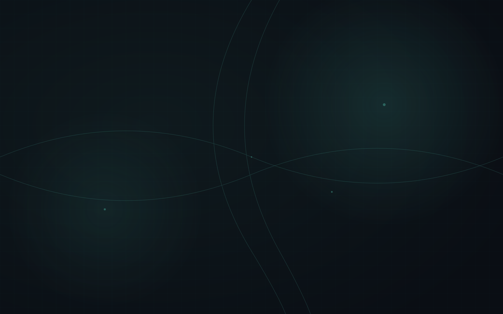

Diffusion NMR & DOSY
Developing matrix-assisted DOSY methods with chiral micelles and resolving agents to differentiate enantiomers and determine absolute configuration.

PhD Candidate · UNICAMP & Max Planck Institute
Exploring molecular recognition and chiral discrimination through the synergy of Nuclear Magnetic Resonance, Molecular Dynamics, and Quantum Mechanical simulations.
Research
My work bridges experimental spectroscopy and atomistic simulation to understand how chiral molecules interact and can be distinguished.
Developing matrix-assisted DOSY methods with chiral micelles and resolving agents to differentiate enantiomers and determine absolute configuration.
Combining molecular dynamics, metadynamics, and DFT calculations to model intermolecular interactions, conformational flexibility, and solvent effects.
Building practical tools and best-practice workflows for NMR data processing, including GNAT tutorials and automated analysis pipelines.
Updates
"Macrocycle Conformational Flexibility as a Key to Enantioselective Recognition" is now published.
Practical guide and best practices for diffusion NMR processing with GNAT in Magnetic Resonance in Chemistry.
Awarded a scholarship to present at SMASH 2025 in Porto, Portugal. Abstract received the highest score.
I'm always open to discussing research, method development, or potential collaborations.